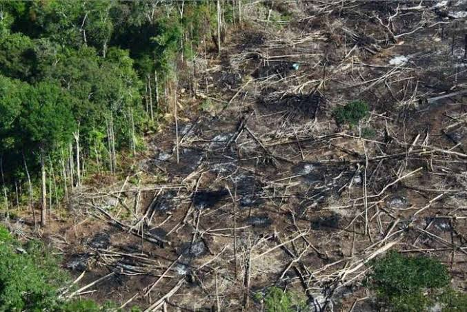

Cuidados e Prevenções com o Carvão.
- NÃO deixar perto de crianças;
- NÃO ingerir ele em forma natural;
- NÃO colocar nos olhos;
- NÃO acender em local perto de madeira, tecidos …
- Seja consciente, uso apenas para adultos. E em forma medicinais apenas com
instrução médica!

Imagem de uma floresta devastada.